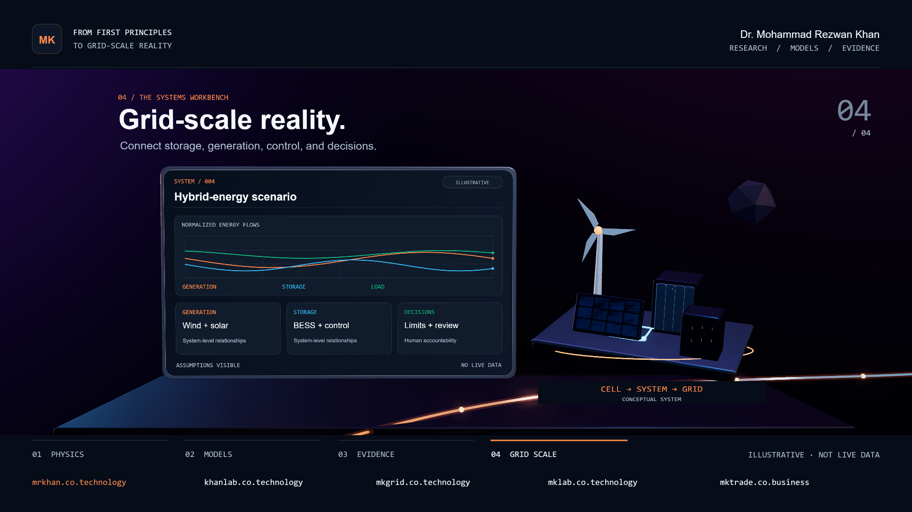

Engineering decisions, with evidence in view.
This integration example preserves the host page’s heading and keeps the film supplementary.

From First Principles to Grid-Scale Reality — Dr. Mohammad Rezwan Khan. Physics, models, evidence, and energy systems.